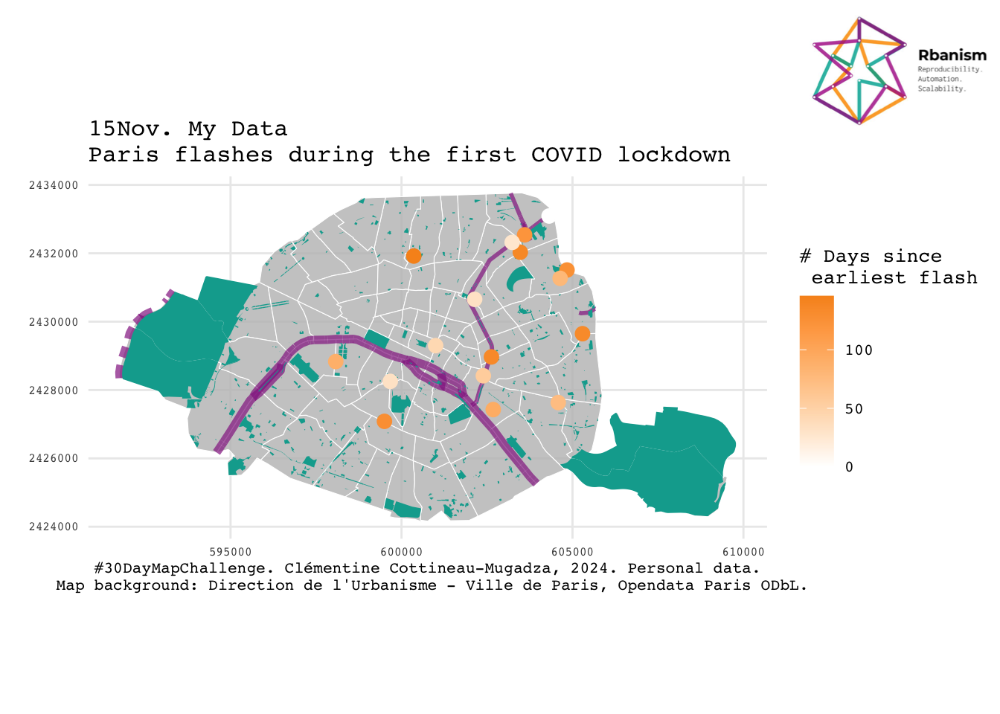
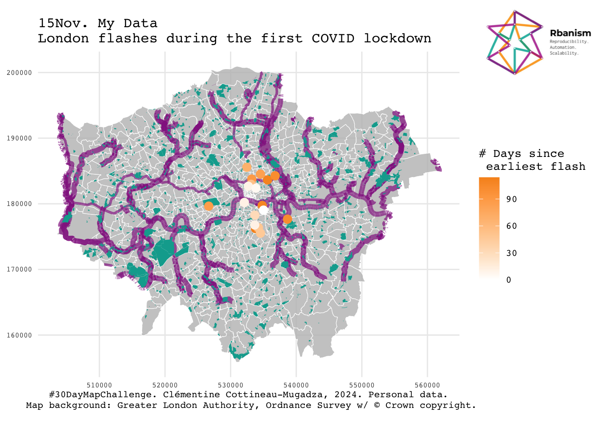

# Define the packages to be used
packages <- c("tidyverse", "sf", "osmdata",
"geojsonR", "httr2", "stringr",
"lubridate", "magick", "magrittr",
"grid", "extrafont")
# Function to check if packages are installed and load them
load_packages <- function(pkgs) {
# Check for missing packages
missing_pkgs <- pkgs[!(pkgs %in% installed.packages()[, "Package"])]
# Install missing packages
if (length(missing_pkgs)) {
install.packages(missing_pkgs)
}
# Load all packages
lapply(pkgs, library, character.only = TRUE)
}
# Load the packages
load_packages(packages)
loadfonts(device = "postscript")#30DMC_15Nov_MyData
15 November. Data: my data.
“Map something personal. Map data from your own life—this could be places you’ve traveled, your daily routine, or any other personal touch.”
1. Package Installation and Loading
2. Import personal data, city backgrounds & Rbanism logo
# Personal data
# https://www.google.com/maps/d/edit?mid=1u_XNZO2eSg8vmpIPjjkHy2nDyPEiuhGa&usp=sharing
mydata <- read_csv("MyData.csv") %>%
mutate(long = word(word(word(geometry, 2, sep="\\("), 1, sep="\\)"), 1, sep="\\ "),
lat = word(word(word(geometry, 2, sep="\\("), 1, sep="\\)"), 2, sep="\\ "),
date = dmy(time))Rows: 45 Columns: 2
── Column specification ────────────────────────────────────────────────────────
Delimiter: ","
chr (2): geometry, time
ℹ Use `spec()` to retrieve the full column specification for this data.
ℹ Specify the column types or set `show_col_types = FALSE` to quiet this message.# Direction de l'Urbanisme - Ville de Paris, Opendata Paris, Open Database License (ODbL) https://opendata.paris.fr/explore/dataset/quartier_paris/export/?disjunctive.c_ar&location=12,48.85889,2.34692&basemap=jawg.streets
paris_WGS84 <- st_read("quartier_paris.geojson") Reading layer `quartier_paris' from data source
`/Users/ccottineau/GitHub/30DayMapChallenge2024/15Nov_MyData/quartier_paris.geojson'
using driver `GeoJSON'
Simple feature collection with 80 features and 11 fields
Geometry type: POLYGON
Dimension: XY
Bounding box: xmin: 2.224078 ymin: 48.81558 xmax: 2.469761 ymax: 48.90216
Geodetic CRS: WGS 84paris_crs <- 27572
paris_metric <- paris_WGS84 %>%
st_transform(.,crs=paris_crs)
# Greater London Authority, Ordnance Survey data with © Crown copyright https://data.london.gov.uk/dataset/statistical-gis-boundary-files-london
london_metric <- st_read("London_Ward.shp") Reading layer `London_Ward' from data source
`/Users/ccottineau/GitHub/30DayMapChallenge2024/15Nov_MyData/London_Ward.shp'
using driver `ESRI Shapefile'
Simple feature collection with 657 features and 6 fields
Geometry type: POLYGON
Dimension: XY
Bounding box: xmin: 503568.2 ymin: 155850.8 xmax: 561957.5 ymax: 200933.9
Projected CRS: OSGB36 / British National Gridlondon_crs <- 27700
london_WGS84 <- london_metric %>%
st_transform(.,crs=4326)
# Download Rbanism logo
rbanism_logo <- image_read('https://rbanism.org/assets/imgs/about/vi_l.jpg')3. One function to filter, crop and map data
city_flash_map <- function(city){
if(city == "Paris"){
city_metric <- paris_metric
city_WGS84 <- paris_WGS84
city_crs <- paris_crs
source <- "Direction de l'Urbanisme - Ville de Paris, Opendata Paris ODbL"
}
if(city == "London"){
city_metric <- london_metric
city_WGS84 <- london_WGS84
city_crs <- london_crs
source <- "Greater London Authority, Ordnance Survey w/ © Crown copyright"
}
bbWGS <- sf::st_bbox(city_WGS84)
### Filter my data to city
mydata_sf <- st_as_sf(mydata, coords = c("long","lat")) %>%
st_set_crs(4326) %>%
st_transform(.,crs=city_crs) %>%
st_intersection(city_metric, .)
mydata_sf <- mydata_sf %>%
mutate(days = as.numeric(max(mydata_sf$date) - date))
### Import OSM data
# Metro
x <- opq(bbox = bbWGS) %>%
add_osm_feature(key = 'railway', value = "subway") %>%
osmdata_sf()
# Waterways
y <- opq(bbox = bbWGS) %>%
add_osm_feature(key = 'waterway') %>%
osmdata_sf()
# Green spaces
z <- opq(bbox = bbWGS) %>%
add_osm_feature(key = 'leisure', value="park") %>%
osmdata_sf()
### Crop OSM features to city extent
metrolines <- x$osm_lines %>%
st_transform(.,crs=city_crs) %>%
st_intersection(city_metric, .)
water <- y$osm_lines %>%
st_transform(.,crs=city_crs) %>%
st_intersection(city_metric, .) %>%
filter(waterway %in% c("canal", "river"))
green <- z$osm_polygons %>%
st_transform(.,crs=city_crs) %>%
st_intersection(city_metric, .)
## Plot the result
ggplot() +
geom_sf(data = city_metric, fill=alpha("grey", 0.8), colour = "white") +
geom_sf(data = water, colour=alpha("#93278F",0.7), aes(linewidth=waterway)) +
scale_discrete_manual("linewidth", values = c(1,2))+
# geom_sf(data = metrolines, aes(colour=ref)) +
geom_sf(data = green, fill="#00A99D", colour = "white", linewidth = 0) +
geom_sf(data = mydata_sf, aes(colour = days), size=3) +
coord_sf(datum = st_crs(city_crs)) +
scale_colour_gradient(low = "white", high = "#F7931E",
na.value = NA, name="# Days since \n earliest flash") +
ggtitle(paste0("15Nov. My Data \n",
city, " flashes during the first COVID lockdown")) +
xlab(paste0("#30DayMapChallenge. Clémentine Cottineau-Mugadza, 2024. Personal data.\n Map background: ", source, ".")) +
guides(linewidth = "none") +
theme_minimal() +
theme(axis.text=element_text(size=6, family="Courier"),
plot.title=element_text(size=12, family="Courier"),
axis.title=element_text(size=8, family="Courier"),
legend.text=element_text(size=8, family="Courier"),
legend.title=element_text(size=10, family="Courier"))
}4. Pick a city and make a map
Paris
city_flash_map("Paris")
grid.raster(rbanism_logo,
x = 0.9, y=0.9,
width = unit(100, "points"))
ggsave(filename = "Paris.png",
width = 8, height = 8, dpi = 300)London
city_flash_map("London")
grid.raster(rbanism_logo,
x = 0.9, y=0.9,
width = unit(100, "points"))
ggsave(filename = "London.png",
width = 8, height = 8, dpi = 300)